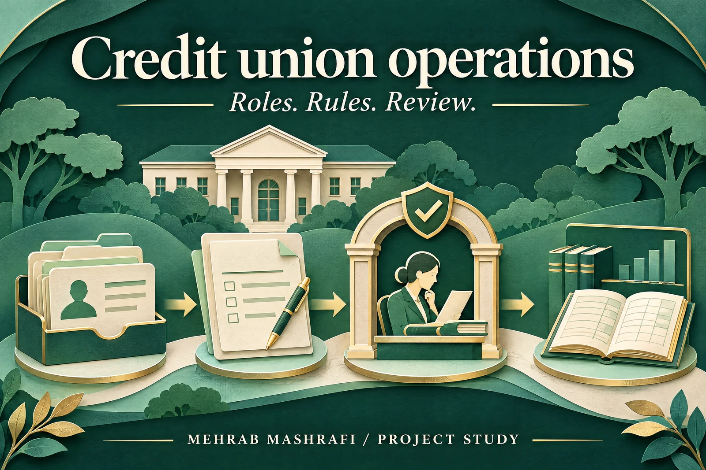

Financial operations · Founder led platform build
Give each credit union role a clear daily workflow
A teller, a loan officer and a board member work from the same operation, but need different tasks and permissions. I led the product plan, delivery and verification for a credit union platform built around those differences.

- My role
- Program owner, requirements and delivery lead
- Work
- Workflow design, reporting, AI assisted development and QA
- Project context
- Platform delivery snapshot, with open work remaining
01 / Situation
One operation, several daily jobs.
Credit union operations connect member onboarding, savings and shares, cash at the front desk, loans and accounting. A teller needs to complete a transaction; a manager needs to see approvals waiting; the board needs a read only view of the operation.
I structured the product around these jobs before assembling the ERPNext and Frappe modules. The aim was a coherent daily workflow across records, permissions and management reporting.
02 / My role
Turn operational rules into a build plan.
I owned the product structure, module breakdown and delivery sequence through AI Byters. I translated the operating requirements into user roles, branch access, approval rules and written flows.
I also defined the questions each management dashboard should answer and coordinated the product, data, model and infrastructure workstreams. I worked hands on with AI assisted development and ran role based QA; this was both delivery leadership and practical build work.
A withdrawal follows the member’s daily context
- 01
Member & account
Check account state and branch access - 02
Daily amount
Consider the cumulative withdrawal total - 03
Approval gate
Apply the configured control - 04
Authorised action
Approve and record the transaction
03 / Decisions
Put the control at the point of action.
The build connected member and account records to front desk transactions and the loan lifecycle, from application through approval, disbursement and repayment. Account holds and branch scoped access belonged in those paths, rather than being separate instructions for staff to remember.
A large withdrawal gate considered a member’s cumulative daily total. That choice matters because checking only the latest transaction can miss the total amount moved during a day. Authorised people retained approval and credit decisions.
For management reporting, I treated plausible placeholder figures as a product defect. The QA work checked that dashboards used daily snapshots and showed an empty value when a figure was unavailable.
04 / Delivery
Verify the workflow as the person using it.
I documented and walked 13 operational paths, including members, accounts, front desk, loans, reporting, scheduled work and security. Audit findings were tracked with the issue, fix and verification result.
At the delivery snapshot, 57 of 70 findings were closed and 13 remained open. This marks the state of the product at that point, not a claim that every issue was resolved.
The outcome was an integrated product build with explicit roles and controls. Customer adoption, lending performance and predictive model effectiveness are separate questions from this delivery work.
Operational paths
13
Documented flows walked during QA.
Findings closed
57 of 70
Thirteen findings remained open in the original snapshot.
Product delivery scope, not a measure of customer adoption or lending outcomes.
Explore the work
Where does an approval leave the workflow?
Bring the roles, transaction rules and reporting questions. We can map the handoff before choosing modules.
Discuss an operations workflow ↗ Email meProject experience by Mehrab Mashrafi. Updated .